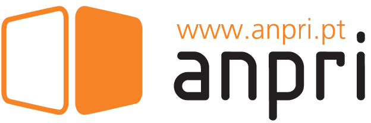

Software Engineer working on large-scale maritime management systems, contributing to backend development in .NET, database modelling, system integrations, and workflow automation. Key responsibilities include: – implementation of backend modules and micro-features – development of SQL Server queries and optimised data structures – integrating external platforms (OAuth2, ERP, documentation systems) – supporting functional teams and improving system reliability – building automated jobs and scheduled tasks using Quartz
Career
Experience
-
Sep
-
Oct

Worked as a Sales Associate during the holiday season, assisting customers with electronics and IT products. Developed strong communication, customer-facing, and product-support skills.
-
Nov
Assisted customers in a retail jewelry environment, performing product presentation, sales, and service support. Learned customer relationship handling, attention to detail, and store operational routines.
-
Aug
Provided customer service in a fast-paced food service environment, managing orders, coordinating with the kitchen, and ensuring a positive dining experience. Strengthened teamwork, multitasking, and communication skills.
Education
-
Oct

I completed a Master’s degree in Data Science, focusing on advanced Machine Learning, statistical modelling, and data engineering. My thesis applied ML techniques to biomedical diagnostics, involving data pipelines, model optimisation, and custom evaluation metrics.
-
Nov
I completed a short intensive course on Artificial Intelligence, covering foundational ML concepts, supervised learning, and practical applications. The course enhanced my understanding of AI workflows and modern data-driven methodologies.
-
Oct
I completed a Bachelor’s degree in Computer Engineering, where I developed a solid foundation in software development, algorithms, databases, and computer systems. Throughout the program, I worked on academic and practical projects that strengthened my problem-solving and engineering skills.
-
May

I attended the short course “Introduction to Game Development with Unity 3D,” where I explored C#, interactive systems, game mechanics, and 3D environments. The program provided hands-on experience with Unity and strengthened my understanding of object-oriented design.
-
Oct
I completed my secondary education in Computer Systems Programming, where I was introduced to programming fundamentals, system architecture, and IT principles. This period sparked my interest in technology and contributed to the foundations of my technical growth.